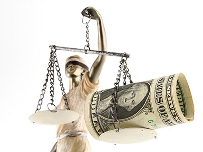
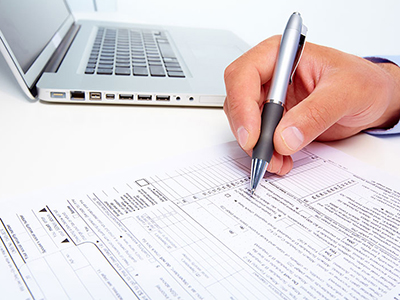

Sastavljanje Izveštaja o tokovima gotovine za 2014. godinu je po prvi puti i obaveza malih preduzeća. Dakle, veliki broj firmi i njihovih knjigovođa prvi put ove godine sastavlja ovaj izveštaj. Stoga, cilj teksta koji sledi jeste da olakša knjigovođama i približi im ovaj izveštaj.
Izveštaj o tokovima gotovine sastavlja se u skladu sa Pravilnikom o sadržini i formi obrazaca finansijskih izveštaja za privredna društva, zadruge i preduzetnike, kao i prema smernicama iz Međunarodnog računovodstvenog standarda - MRS 7 Izveštaj o tokovima gotovine i Odeljka 7 Izveštaj o tokovima gotovine MSFI za MSP.
Tokovima gotovine smatraju se naplate i isplate u gotovini i gotovinskim ekvivalentima preko poslovnih računa i deviznog računa, kao i kompenzacije, asignacije i cesije...
saznaj višePrema Zakonu o radu poslodavac isplaćuje minimalnu zaradu u visini koja se određuje na osnovu odluke o minimalnoj ceni rada koja važi za mesec u kojem se vrši isplata. Za period januar – decembar 2015.godine utvrđena je minimalna cena rada, bez poreza i doprinosa za obavezno socijalno osiguranje, po radnom času u iznosu od 121 dinar, neto.
Dakle, prilikom isplate minimalne zarade za decembar 2014.godine u januaru 2015.godine, poslodavci su dužni da kao minimalnu cenu rada isplate iznos od 121 dinar po radnom času, neto. Minimalna neto zarada za decembar tako iznosi 22.264 dinara (184sati X 121rsd = 22.264), dok je minimalna bruto zarada 30.156,63 dinara.
Poslednjim izmenama Zakona o porezu na dobit pravnih lica iz decembra 2014.godine (Sl.Glasnik 142/14), utvrđene su sledeće novine:
Kao rashod u poreskom bilansu priznaju se (pored ranije postojećih) i izdaci za humanitarnu pomoć, odnosno otklanjanje posledica nastalih u slučaju vanredne situacije, a u zbirnom iznosu najviše do 5% od ukupnog prihoda.
Rokovi za podnošenje poreske prijave i poreski bilans kod likvidacije i stečaja su produženi, te su sada 60 dana od dana:

Sistem samooporezivanja podrazumeva da sam poreski obveznik obračunava porez na ostvareni prihod, popununi odgovarajuću poresku prijavu i plati porez koji je samostalno utvrdio, u propisanom roku.
Fizička lica samooporezivanjem plaćaju porez na prihode po osnovu:
Dakle, ukoliko je prihode pod rednim brojem 2 isplatilo pravno lice ili preduzetnik, onda su ta lica u obavezi da obustave i uplate porez...
saznaj višeFizička lica – rezidenti i nerezidenti
Prema Zakonu o porezu na dohodak građana, stopa poreza na dividendu i učešće u dobiti iznosi 15%. Ova stopa se odnosi na fizička lica rezidente.
Na fizička lica nerezidente se takođe primenjuje ova stopa. Ukoliko postoji Ugovor o izbegavanju dvostrukog oporezivanja sa zemljom čiji je rezident ostvario prihod od dividende u Srbiji, može se primeniti stopa iz datog Ugovora. Ukoliko nerezident želi da se primeni stopa poreza iz Ugovora, neophodno je da dokaže nerezidentnost overenom potvrdom o rezidentnosti. Potvrda o rezidentnosti podrazumeva: overen POR-2 obrazac (dostupan na sajtu Poreske uprave) ili overeni prevod potvrde o rezidentnosti na obrascu koji propisuje nadležni organ...
saznaj višeKapitalni dobitak / gubitak
Kapitalni dobitak / gubitak je razlika između prodajne cene udela, hartija od vrednosti (akcija, obveznica i sl.) i prava i njihove nabavne cene, ostvarenu prodajom ili prenosom:
Poreski obveznik
Fizičko lice i preduzetnik koji je izvršio...
saznaj više
Poresko uverenje Vam može biti često potrebno - kako biste učestvovali na tenderu, podneli zahtev za kredit, izvršili transfer novca, upisali dete u vrtić, izvršili overu zdravstvene knjižice i slično. Zahtev za izdavanje poreskog uverenja se podnosi u pismenoj formi nadležnoj organizacionoj jedinici Poreske uprave (prema sedištu/prebivalištu). Za pravno lice zahtev podnosi zakonski zastupnik ili punomoćnik uz priloženo punomoćje koje ne mora biti overeno od strane nadležnog organa.
Zahtev sadrži sledeće obavezne elemente: podatke o podnosiocu zahteva (ime i prezime, JMBG, adresu stanovanja, naziv pravnog lica, PIB, matični broj sedište), period za koji se zahtev podnosi, naziv evidencije iz koje je potrebno dati podatke, svrhu podnošenja zahteva. Primer obrasca zahteva postoji...
saznaj više